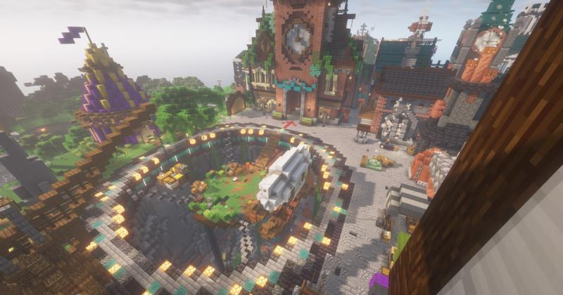

Datum serveru není známé , víme jenom to že byl založen v roce 2010
Místo původu je Spojené království
Zakladatel serveru je BRooNiE
Celkový počet hráčů byl 5156 (poslední sčítání z roku 2014)
Bohužel v této době už na serveru hraje 0 hráčů ale jinak furt běží
Je to nejznámější server ve Spojeném království
Crazy-Wools je normální survival server
